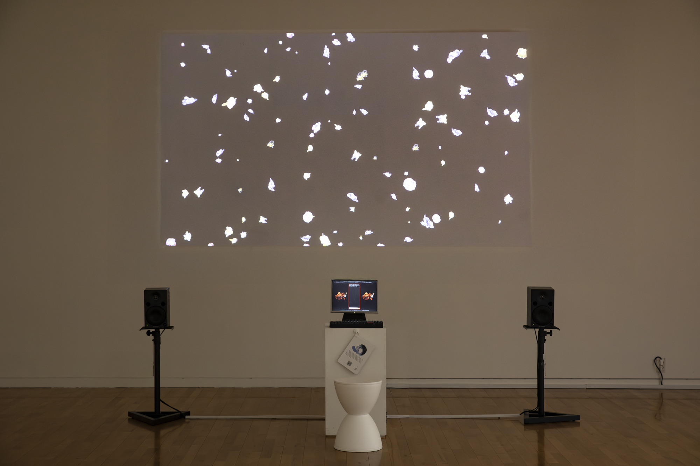
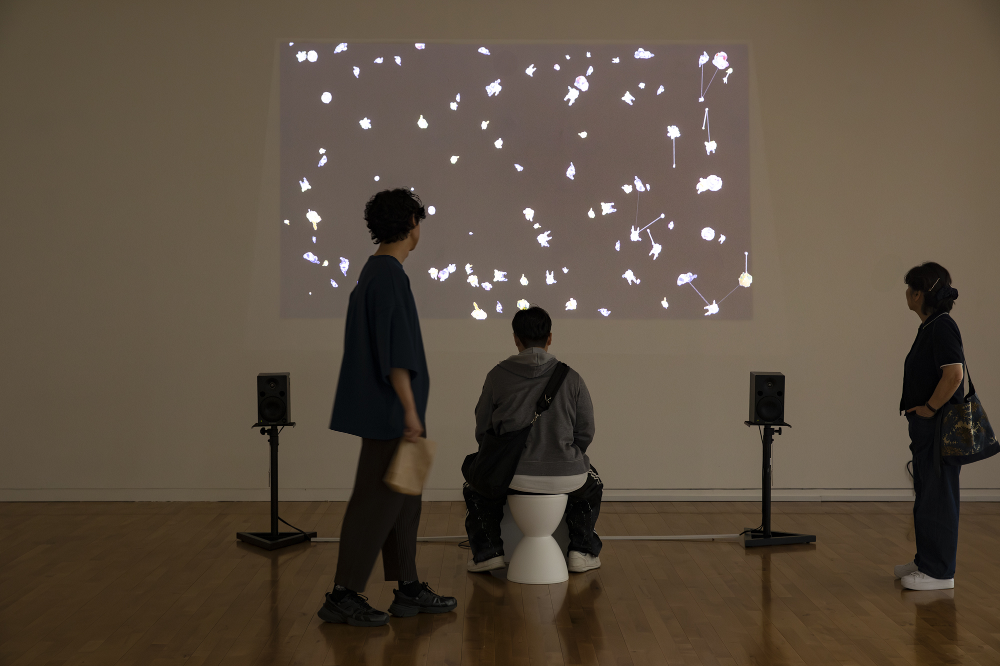
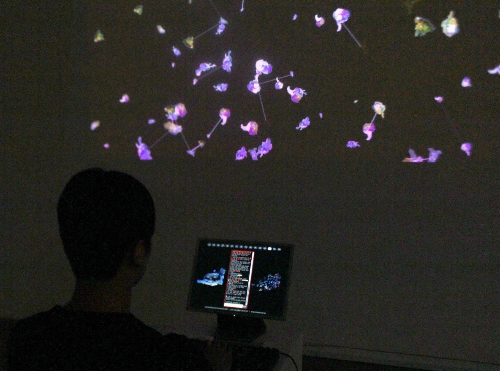
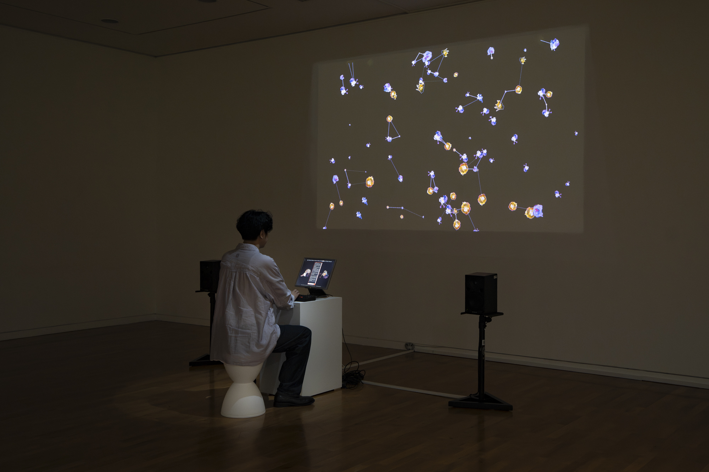
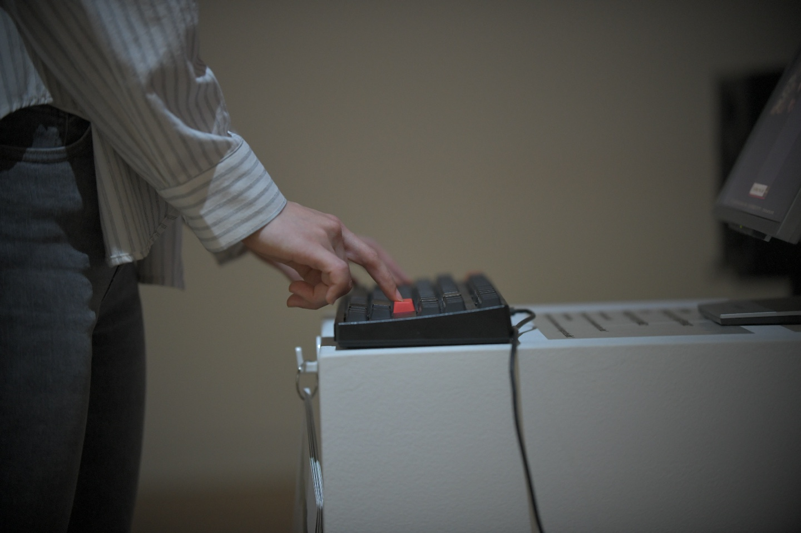
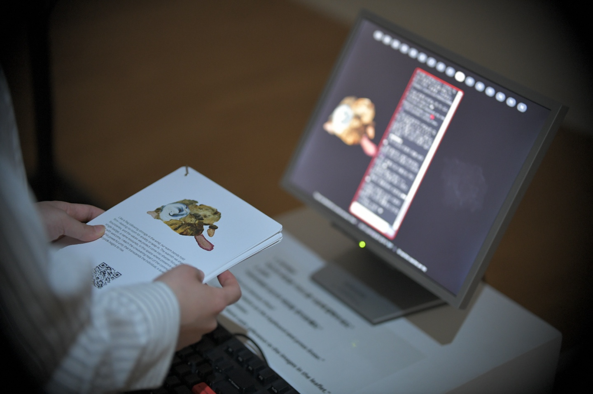

"Transaction of Desires"(2025.05) in ISEA2025 · Seoul Arts Center
"Transaction of Desires" is an interactive installation that explores desire as a viral and mutating force. The work combines analog stamp-based painting with digital retranslation, creating hybrid images that shift between physical textures and machine logic.
In real time, audience input is processed through the YangYeong model, classifying it into 16 categories of desire using natural language processing. The results are instantly visualized as dynamic images and sounds, while a live YouTube API connection integrates streaming data, amplifying the collective ecosystem of desires.
The installation turns the exhibition space into a living field where personal impulses spread, transform, and collide with others.
PC, monitor, projection, pedestal, live image generation and screening, interpretation card, 2-channel sound, variable dimensions, 2025
Collaborated with Philip Liu (Sound Support)





